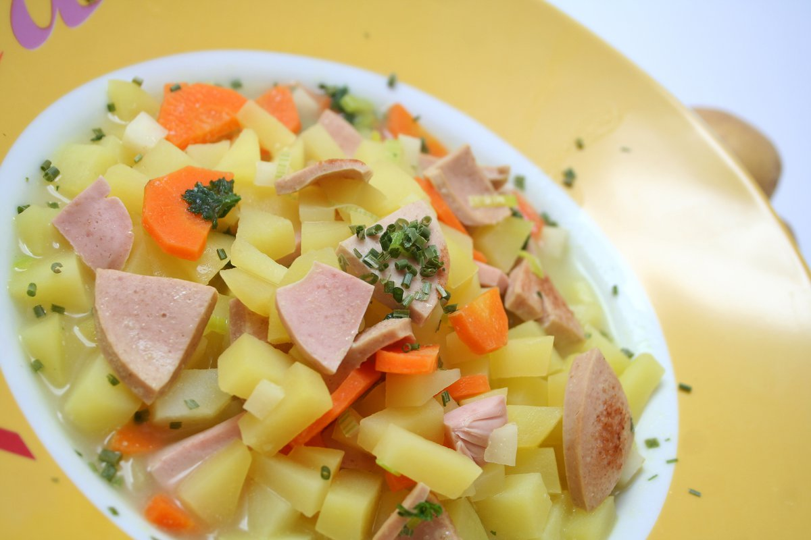

Makkarakeitto recept
Makkarakeitto raaka-aineet:
- Hk-sininenlenkki 500grammaa
- Keittojuurekset pirkka 400grammaa
- lihaliemikuutio 1kpl
- vesi 2 litraa
- mustapippuri ruokalusikallinen
Keitto-ohje
- laita vesi kiehumaan keittojuureksineen 10min
- ruskista makkarat pannulla ja lisää veteen
- laita sekaan lihaliemikuutio ja mustapippurit
- nauti ruisleivän kanssa